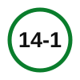
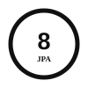
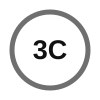
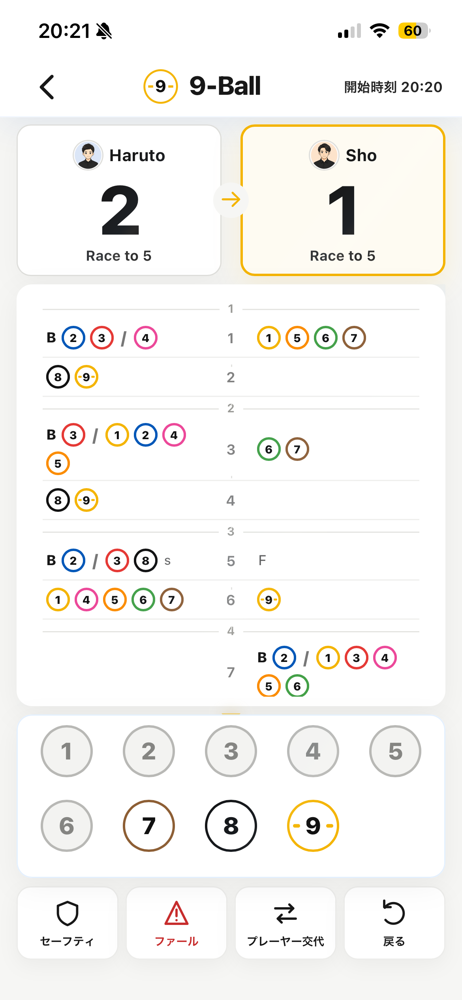
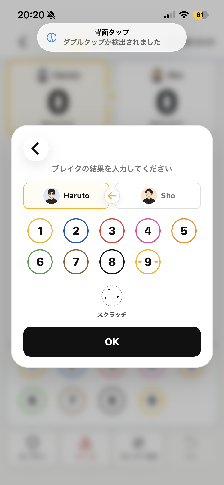
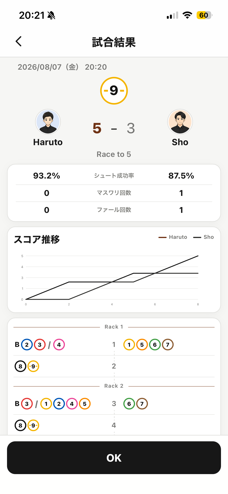
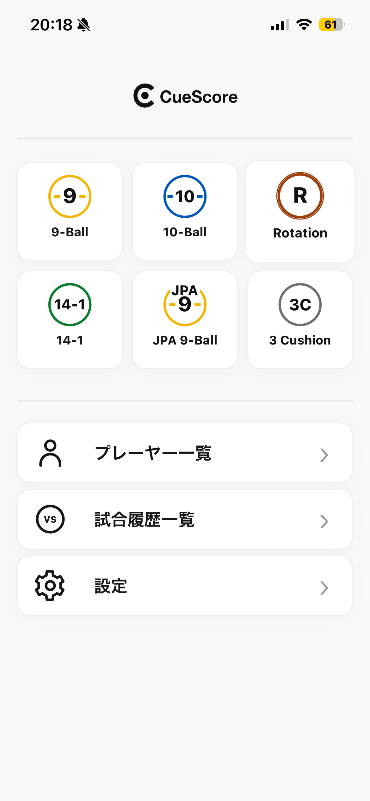
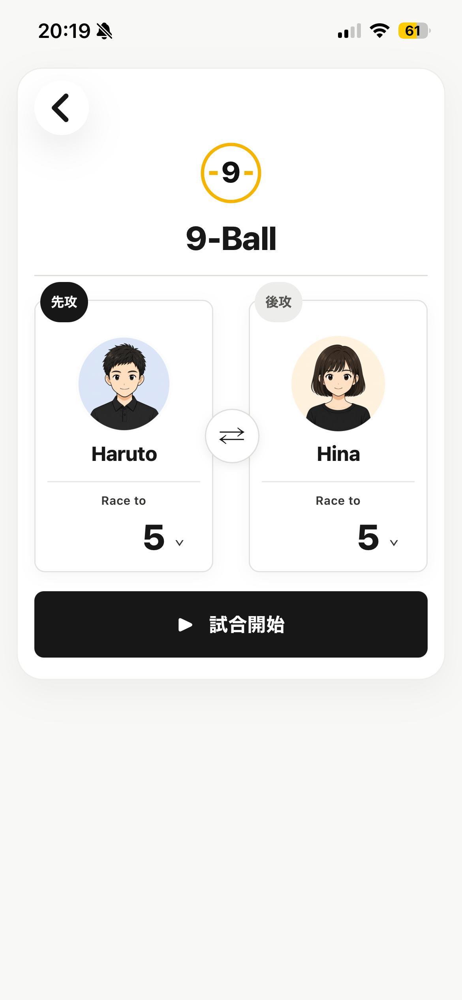
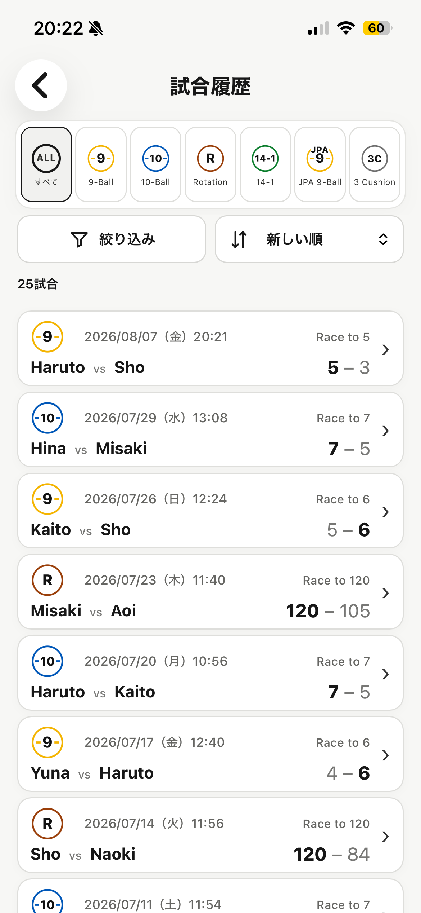
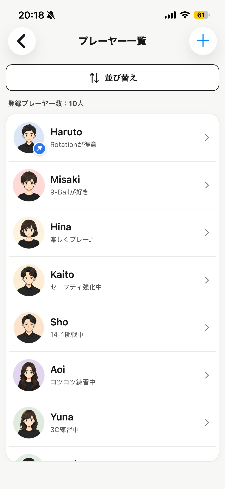

Rotation
ローテーション
種目ごとの個性は小さなアクセントカラーで。基本の操作感と情報設計はCueScore全体で統一します。
ローテーション
9ボール
10ボール

ストレートプール
JPA 9ボール

JPA 8ボール

スリークッション
プレーヤー、得点、履歴、ボール選択を一つの流れに。必要な情報を、必要な場所に置きます。

手番、得点、ボール、履歴を一画面で確認。種目カラーは必要な場所だけに使い、白・黒・グレーを基調にしています。

ブレイク権を持つプレーヤーと種目を視覚的に整理。ゲーム中と同じ考え方で、迷わず入力できます。

勝敗だけでなく、試合の流れや履歴を振り返れる結果画面。記録を残して、次のプレーへ。
プレーヤーを登録し、アバターやメモと一緒に管理。
複数種目の試合履歴を、後からいつでも確認。
通信環境に左右されにくい、オフラインを前提とした設計。

Home

New Match

History

Player
CueScoreは現在、正式公開に向けて最終調整を進めています。公開後、このサイトからApp Storeへ案内します。